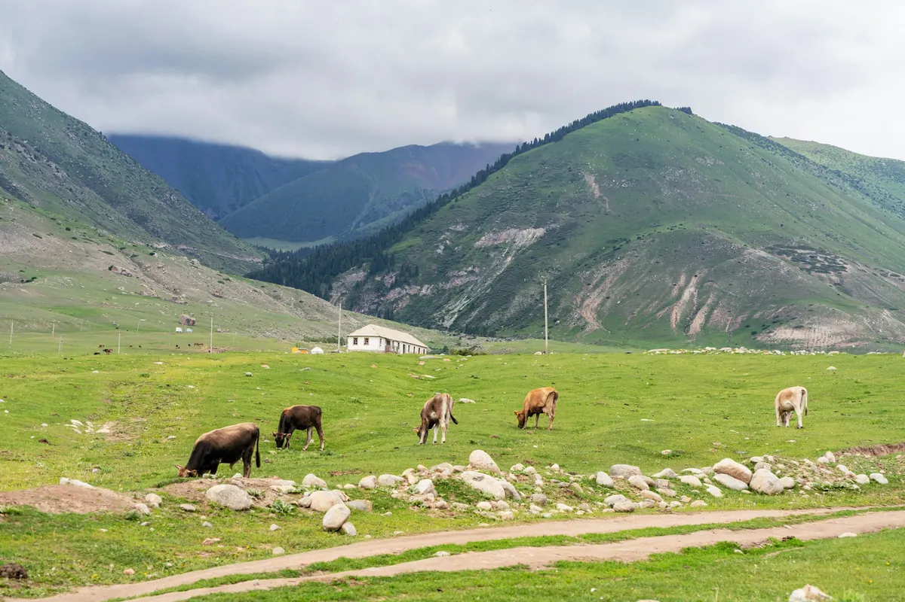
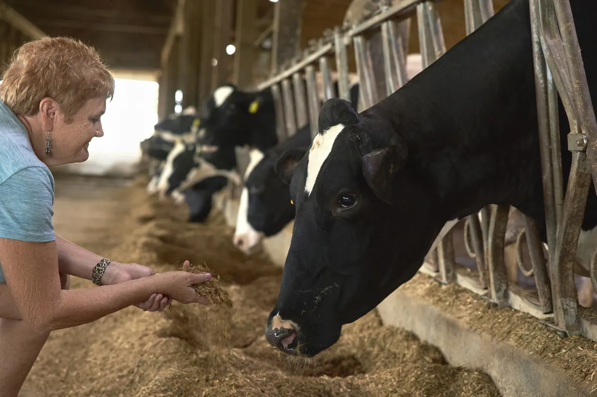
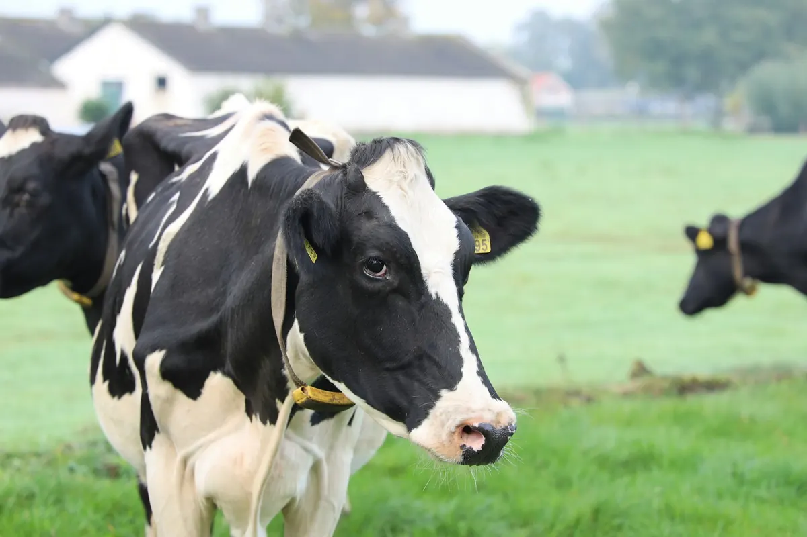

Gospodarstwo
Opiekujemy się też zwierzętami gospodarskimi: lecznictwo, profilaktyka, szczepienia, a przy bydle także rozród.


Rozród bydła
Krowa, która nie zachodzi w ciążę, to realna strata dla gospodarstwa. Pomagamy ustalić przyczynę i ją leczyć.
- leczenie niepłodności bydła
- inseminacja
- położnictwo i ginekologia

Lecznictwo i profilaktyka
Pełen zakres szczepień, zwalczanie pasożytów zewnętrznych i wewnętrznych, leczenie i zabiegi chirurgiczne.
- szczepienia
- pasożyty zewnętrzne i wewnętrzne
- leczenie chorób
- zabiegi chirurgiczne